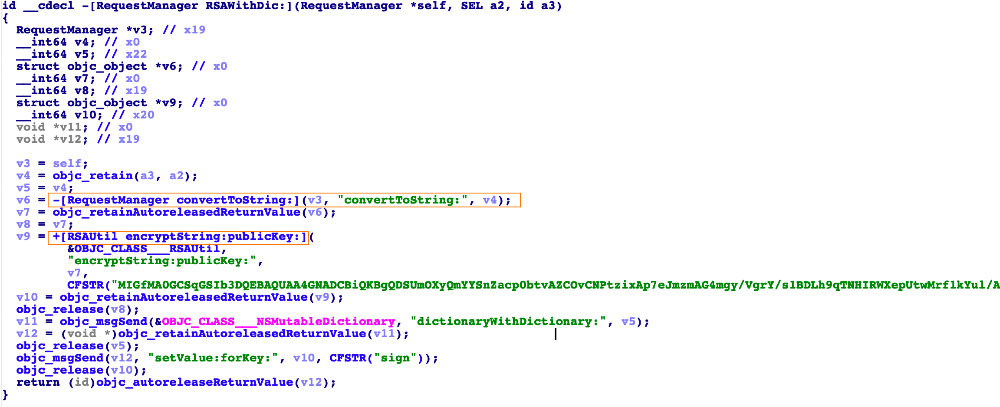

当快捷指令遇上智能门锁
0x01 前言
前段时间朋友小区换了一个智能门禁系统，户主通过一个APP进行管理，可以远程进行开锁操作。刚好这段时间在使用IOS的快捷指令操作，于是想做一个一键开门的快捷指令，直接通过快捷指令来完成开门的操作。
0x02 逆向分析
首先打开APP进行抓包，发现参数中有一个加密的sign值。
sign值与其他参数都有关系，修改其他参数会提示签名验证失败，而且时间久了该数据包不可用，提示时间不正确，请调整时间。
于是接下来对APP进行逆向，分析sign值是如何生成的。APP是从APPStore上下载的，首先第一步先进行砸壳。
数据线连接越狱的手机，打开app，执行frida-ps -Ua,查看Identifier
1 | frida-ps -Ua |
使用frida-ios-dump砸壳
1 | iproxy 2222 22 |
解压得到的ipa文件，使用IDA打开Mac-O文件，在Strings window搜索appUser/login
找到后查找引用
继续查找
发现在+[LoginViewModel login:password:success:failure:]方法中调用了。
双击进入-[RequestManager POST_URLString:parameters:showIndicatior:success:failure:]方法，
在该方法中调用了-[RequestManager RSAWithDic:]方法，根据方法名可以猜出该方法是对参数进行了RSA加密。
打开-[RequestManager RSAWithDic:]方法

发现参数sign是由其他参数进行RSA加密获得的。查看加密的参数格式的话可以通过frida-trace进行hook查看。
可以对-[RequestManager convertToString:]方法或者+[RSAUtil encryptString:publicKey:]方法进行hook。
查看-[RequestManager convertToString:]方法的参数与返回值，执行
1 | frida-trace -U -f com.xx.xxlife -m "-[RequestManager convertToString:]" |
Ctrl-C 停止运行，修改convertToString_.js
1 | { |
再次运行，可以看到参数与返回值
查看+[RSAUtil encryptString:publicKey:]方法的参数与返回值，执行：
1 | frida-trace -U -f com.xx.xxlife -m "+[RSAUtil encryptString:publicKey:]" |

由上面的hook可以看到加密的参数格式以及RSA的public key，接下来进行验证一下。
这里有一个问题，当使用该public key进行加密时，当加密的数据长度大于117时，会报错。
解决的方法是对加密的数据根据长度117进行分割，使用rsa加密后拼接，最后返回拼接后的数据。
修改后可以成功登录，接下来是一键开门的操作。
当使用一键开门的功能时提示该小区未开启一键开门功能
之前是可以使用该功能的，可能由于有业主频繁的开门，物业怕影响正常的使用，后来该功能就不可用了。
根据关键字定位到sub_1000B5978函数
发现是否开启一键开门功能是根据isClickOpen来判断的，当该值不为2时可以使用该功能。在操作APP的时候可以发现返回值中有isClickOpen，通过拦截数据包修改该值为非2的值，如修改为1。
再次使用一键开门功能可以正常使用。该功能发送的请求：
1 |
|
其中参数houseId是户主的房屋id，是固定值，与登录的用户有关。可以通过接口appUserHouse/getHouseAndFocusList获取。
参数terminalCode是小区门的编码，该值可能会变化，可以通过接口door/list获取。
返回的内容
然后就可以利用代码实现一键开门的操作
为了不影响正常使用，这里仅获取houseId与terminalCode，不进行开门操作。
接下来就是快捷指令的编写，实现一键控制。
0x03 快捷指令编写
如果结合其他APP或者借助其他平台的话很容易就可以编写快捷指令，如可以使用Pythonista(需付费下载)，复制上面的python脚本，直接通过快捷指令调用，也可以通过快捷指令登录SSH运行脚本(需要有服务器)。
但对于普通用户来说这种操作不易实现（需要一定的成本），这里采取了一种稍微繁琐的方法，但都尽量采用快捷指令来实现（或者借助免费的应用来实现）。
以登录过程为例，进行快捷指令的编写。
登录过程所需的参数：

| 参数名称 | 说明 |
|---|---|
| accessToken | 登录时为空 |
| applicationType | 当前环境下固定值2 |
| deviceType | 当前环境下固定值2 |
| password | 密码 |
| phone | 手机号 |
| sign | 对其他参数进行RSA加密获取 |
| timestamp | 当前时间的时间戳 |
| version | 当前版本3.01.0 |
| versionCode | 当前版本3010 |
其中时间戳和RSA加密的sign值需要去获取，获取时间戳可以通过快捷指令来实现。

RSA加密的话，本来可以借助在线平台来实现，但是由于使用该APP的Public key进行加密时，待加密字符串长度大于117时会报错。
使用截取字符串的话快捷指令没有截取文本，只有一个根据条件拆分字符，所以这里打算借助其他APP通过执行JavaScript脚本来实现。这里采用的APP是JSBOX，虽然该APP有很多功能，但是都需要高级版才可以使用。不过免费版可以通过快捷指令来执行JavaScript脚本。
JS实现RSA加密可以使用jsencrypt ，主要代码：
1 | /**省略jsencrypt代码**/ |
RSA加密的快捷指令
这样借助JSBOX运行JavaScript来实现RSA加密就完成了，剩下的就好做了。
一个快捷指令可以看作是程序里的一个函数，可以在其他快捷指令中来调用。使用快捷指令的的登录过程如下：

登录成功返回accessToken，然后在其他操作中需要使用该token。其他的操作都类似，先在快捷指令中调用登录，然后请求相关的api即可。如开门的快捷指令如下：
使用的话可以直接点击开东门的快捷指令，或者使用语音嘿Siri，开东⻔来开启小区入口门。开启其他大门类似，修改对应的terminalCode即可。
给别人使用的话也很简单，通过快捷指令Backup Shortcuts To iCloud将所需的快捷指令共享给别人，然后下载JSBOX即可使用。
0x04 总结
本文通过快捷指令实现了一个”智能开门”指令，快捷指令实现起来比较简单，但是功能有限制，有些功能需要借助一下其他的APP或者平台才能实现，本文为了大众化才采用了比较繁琐的方法来实现，如果是自己使用的话当然是怎么方便怎么来。